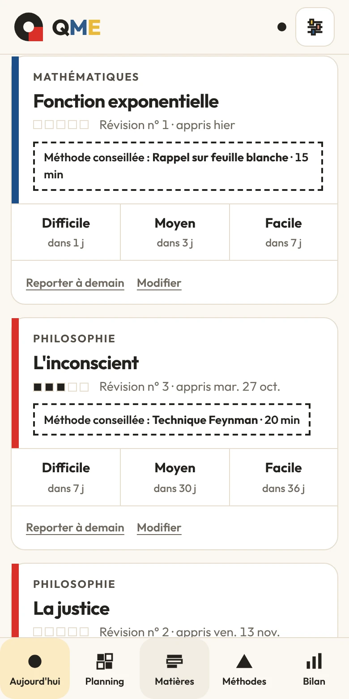

La date d'examen
Rien après. Une révision finale avant.

Données fictives
Partiels
Arrêtez
de relire.
Relire son cours trois fois la veille donne l'impression de travailler.
C'est la méthode qui retient le moins.
La répétition espacée
Revoir au bon moment.
Après chaque révision
Un clic : la date suivante s'ajuste.

Données fictives
La date d'examen
Rien après. Une révision finale avant.
Données fictives
Transmettez-lui. Démo libre, sans inscription.
qm-engineering.fr/templates